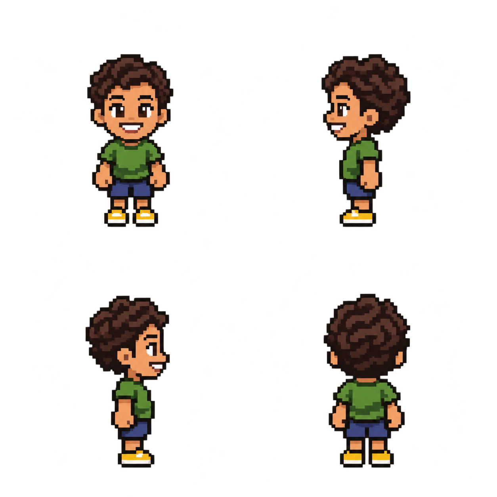
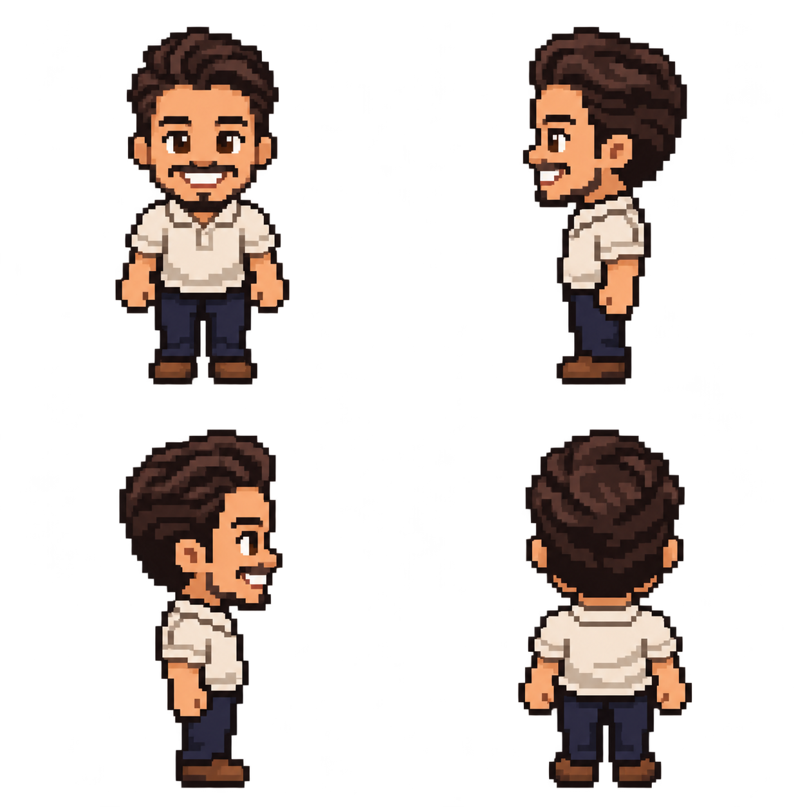
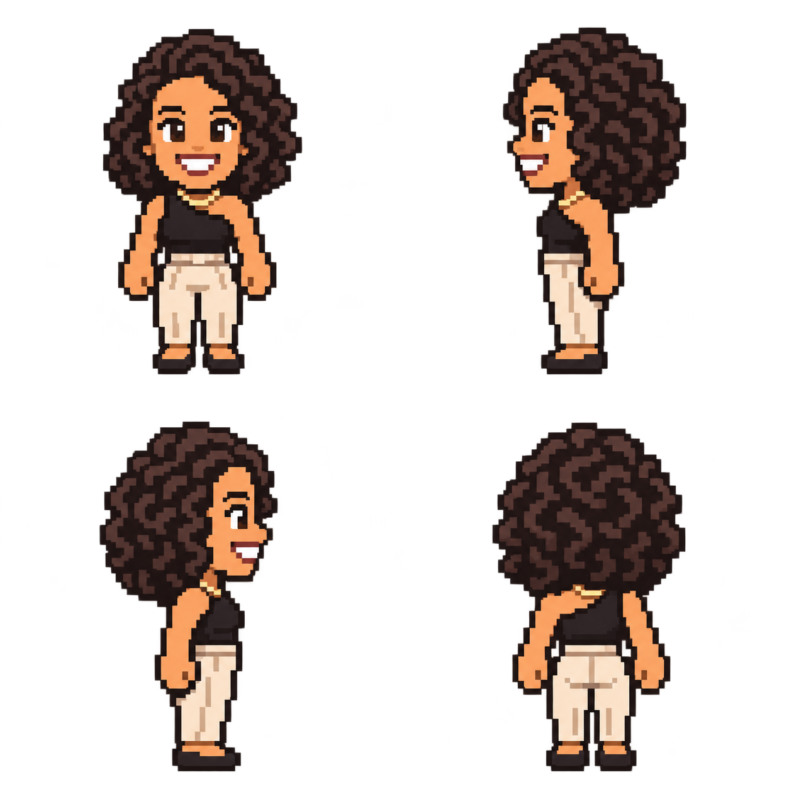
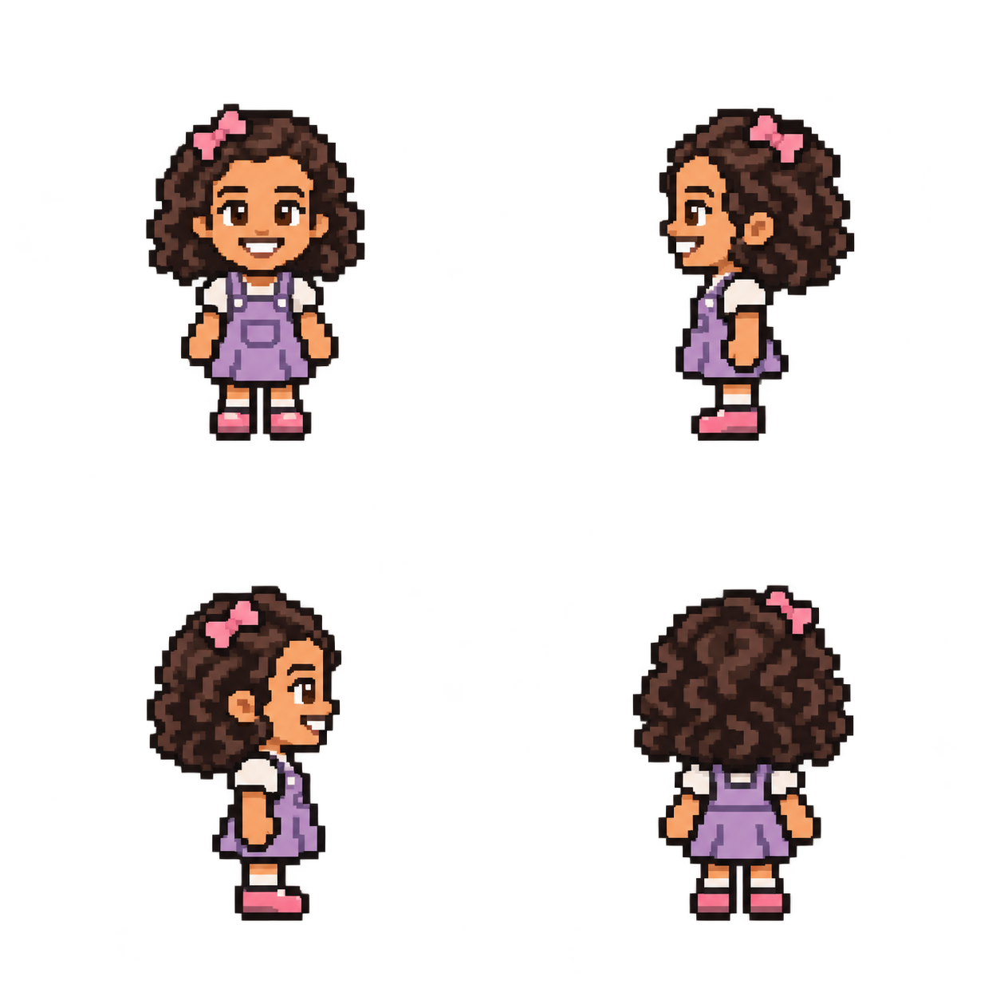

Um sobrenome.
Uma ambição absurda.
A família Paim de Araujo tem dois filhos e um plano: transformar a família em uma cidade. Antes disso, alguém precisa recolher os brinquedos.
BORA, FAMÍLIA! →Amor infinito. Orçamento finito.
Paternidade no modo arcade.
Controle o Gringo, sustente a casa e aumente a família. A Esposa é sua aliada e ajuda a limpar, alimentar as crianças, preparar mamadeiras e reparar a casa.
- WASD ou ↑ ↓ ← →
- Mover o Gringo.
- E ou Espaço
- Interagir com o objeto mais próximo.
- Clique ou toque
- Caminhar e agir no alvo. No celular, use também os botões na tela.
- 1 a 5
- Ativar os poderes do Gringo.
- M
- Abrir melhorias e a prioridade da Esposa.
- V
- Ver todos os cômodos após expandir a casa. O minimapa aceita cliques.
- P ou Esc
- Abrir o menu e pausar a partida.
- Botões ♫ e ♩
- Controlar a música e os efeitos separadamente. A música começa após o primeiro clique ou tecla.
Sempre cabe mais um?
O botão QUERO MAIS UM! inicia um desafio de 60 segundos. O custo é pago no início: recolha a bagunça, prepare mamadeiras e trabalhe até completar os objetivos. A ajuda da Esposa também conta. Quando tudo está pronto, chega um novo herdeiro.
Recolha os brinquedos para baixar o caos. Crianças com o símbolo de mamadeira estão com fome. Use a cozinha para preparar 3 mamadeiras por R$ 5, o notebook para ganhar dinheiro e as ferramentas para reparar 22% da casa por R$ 12.
Casal perfeito, caos compartilhado.
Ações dos dois em até sete segundos carregam o combo mais rápido e ativam Amor Infinito, Super Pais e Mutirão da Família. Em Melhorias, você pode priorizar a limpeza, comprar robôs e aumentar a renda.
Expanda de casa para mansão, condomínio, bairro e cidade. As compras adicionam cômodos e serviços, restauram a integridade e aumentam a renda, a manutenção e a bagunça. Cada novo espaço traz trabalho para a família.
Cuide da família. E do orçamento.
A partida termina se a integridade da casa chegar a 0% ou o caixa cair para R$ −60. Aos 100 filhos, você já criou um município. E ainda pode chegar aos 500.
Seu progresso e recorde ficam neste navegador. A home retoma a partida automaticamente; use o menu para reiniciar. Ao sair da aba, o jogo pausa. Mudar de dispositivo ou endereço não transfere o save.
ENTENDI. VOLTAR AO JOGO →